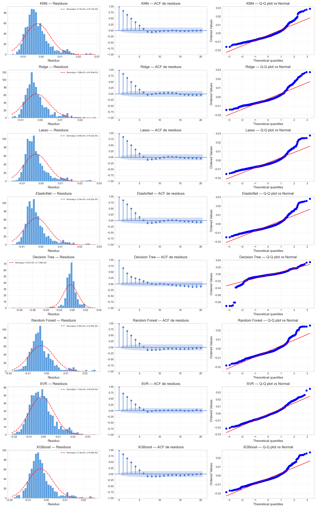

8. Residuos y Diagnósticos#
Curso: Machine Learning · Pregrado en Ciencia de Datos · Universidad del Norte Docente: Dr. Lihki Rubio Equipo: Juan Camilo Conrado · Sergio Cadavid · Mateo Chang
Este notebook examina las propiedades estadísticas de los residuos de cada modelo de regresión. Un buen modelo debe producir residuos que se aproximen a ruido blanco: media cero, varianza constante (homocedasticidad), independientes y aproximadamente normales.
Tests aplicados a cada modelo:
Test |
Referencia seminal |
Hipótesis nula H₀ |
Qué revela rechazar H₀ |
|---|---|---|---|
White |
White (1980) |
Homocedasticidad |
El modelo subestima/sobreestima en regiones específicas |
BDS |
Brock, Dechert, Scheinkman & LeBaron (1996) |
Residuos i.i.d. |
El modelo ignora dependencia no lineal |
Ljung-Box |
Ljung & Box (1978) |
Sin autocorrelación residual |
El modelo no captura dinámica temporal |
Jarque-Bera |
Jarque & Bera (1980) |
Normalidad de los residuos |
Los residuos tienen colas pesadas o asimetría |
Sobre las referencias bibliográficas:
White (1980) introdujo el test de heterocedasticidad en su célebre paper «A Heteroskedasticity-Consistent Covariance Matrix Estimator and a Direct Test for Heteroskedasticity» (Econometrica). Su contribución central no es solo el test — es el estimador de varianza robusto («White SE») que aún se usa universalmente.
Brock, Dechert, Scheinkman & LeBaron (1996) formalizaron el BDS test como prueba general de independencia basada en el integral de correlación (Grassberger-Procaccia). Detecta cualquier dependencia no-lineal — caos determinista, GARCH residual, regímenes ocultos.
Ljung & Box (1978) propusieron el test de autocorrelación que perfecciona el de Box-Pierce (1970), corrigiendo el sesgo en muestras pequeñas. Es el diagnóstico estándar tras ajustar un ARIMA — y por extensión, tras cualquier modelo de series de tiempo.
Jarque & Bera (1980) combinan skewness y excess kurtosis en un único estadístico χ². Es la prueba más usada para normalidad de residuos econométricos por su simplicidad.
Importante: en problemas de finanzas con colas pesadas, rechazar JB es esperado y no invalida el modelo, solo justifica el uso de inferencia robusta vía bootstrap (notebook 09).
# Path setup
import sys
from pathlib import Path
_root = Path.cwd().parent if Path.cwd().name == "notebooks" else Path.cwd()
if str(_root) not in sys.path:
sys.path.insert(0, str(_root))
1. Imports y carga#
import json
import numpy as np
import pandas as pd
import matplotlib.pyplot as plt
import warnings
warnings.filterwarnings("ignore")
from statsmodels.graphics.tsaplots import plot_acf
from src.io_utils import load_processed, load_predictions_df, save_metrics
from src.stats_tests import (white_test, bds_test, ljung_box_test,
jarque_bera_test, full_residual_diagnostics)
from src.config import DATA_PROCESSED
from src.viz import set_style
set_style()
test = load_processed("test_reg")
preds = load_predictions_df("reg_test_preds")
with open(DATA_PROCESSED / "feature_columns.json") as f:
feature_cols = json.load(f)
# Modelos disponibles en el dataframe (excluir 'date' y 'y_true')
model_names = [c for c in preds.columns if c not in ["date", "y_true"]]
y_true = preds["y_true"].values
X_test = test[feature_cols].values
print(f"Modelos a diagnosticar: {model_names}")
print(f"N test: {len(y_true)}")
Modelos a diagnosticar: ['KNN', 'Ridge', 'Lasso', 'ElasticNet', 'Decision Tree', 'Random Forest', 'SVR', 'XGBoost']
N test: 1045
2. Aplicar los 4 tests a cada modelo#
diagnostics = {}
for name in model_names:
y_pred = preds[name].values
diag = full_residual_diagnostics(name, y_true, y_pred, X_test)
diagnostics[name] = diag
print(f" ✅ {name} diagnosticado")
✅ KNN diagnosticado
✅ Ridge diagnosticado
✅ Lasso diagnosticado
✅ ElasticNet diagnosticado
✅ Decision Tree diagnosticado
✅ Random Forest diagnosticado
✅ SVR diagnosticado
✅ XGBoost diagnosticado
3. Tabla resumen de p-valores#
# Construir DataFrame con p-valores de cada test por modelo
rows = []
for name, d in diagnostics.items():
rows.append({
"Modelo": name,
"p_White": d["white"].get("p_value", np.nan),
"p_BDS_dim2": d["bds"].get("p_value_dim2", np.nan),
"p_LjungBox": d["ljung_box"].get("p_value", np.nan),
"p_JarqueBera": d["jarque_bera"].get("p_value", np.nan),
"Skew": d["jarque_bera"].get("skew", np.nan),
"Kurtosis": d["jarque_bera"].get("kurtosis", np.nan),
})
df_diag = pd.DataFrame(rows)
# Resaltar p-valores < 0.05 con un asterisco
def fmt_p(p):
if pd.isna(p): return "—"
if p < 0.001: return f"{p:.2e} ***"
if p < 0.01: return f"{p:.4f} **"
if p < 0.05: return f"{p:.4f} *"
return f"{p:.4f}"
df_show = df_diag.copy()
for col in ["p_White", "p_BDS_dim2", "p_LjungBox", "p_JarqueBera"]:
df_show[col] = df_show[col].apply(fmt_p)
df_show["Skew"] = df_show["Skew"].round(3)
df_show["Kurtosis"] = df_show["Kurtosis"].round(3)
print("=== Diagnósticos de residuos por modelo ===\n")
print(df_show.to_string(index=False))
print("\n* p<0.05 ** p<0.01 *** p<0.001")
=== Diagnósticos de residuos por modelo ===
Modelo p_White p_BDS_dim2 p_LjungBox p_JarqueBera Skew Kurtosis
KNN 0.2559 2.72e-308 *** 0.00e+00 *** 8.13e-179 *** 1.499 6.138
Ridge 0.3291 0.00e+00 *** 0.00e+00 *** 1.49e-234 *** 1.679 6.669
Lasso 0.1210 0.00e+00 *** 0.00e+00 *** 1.06e-275 *** 1.757 7.090
ElasticNet 0.1368 0.00e+00 *** 0.00e+00 *** 5.54e-257 *** 1.718 6.912
Decision Tree 1.35e-13 *** 2.71e-194 *** 3.92e-182 *** 0.00e+00 *** -2.848 24.707
Random Forest 0.0040 ** 0.00e+00 *** 0.00e+00 *** 2.20e-178 *** 1.427 6.263
SVR 0.0466 * 1.20e-294 *** 6.31e-250 *** 3.83e-35 *** 0.811 4.006
XGBoost 0.0042 ** 0.00e+00 *** 0.00e+00 *** 2.25e-168 *** 1.407 6.133
* p<0.05 ** p<0.01 *** p<0.001
📊 Interpretación de los tests:
White (heterocedasticidad): si se rechaza, la varianza de los residuos depende de las features. En finanzas esto es muy común porque los días de alta volatilidad realizada también tienen alta varianza de error. Implicación: los intervalos de confianza paramétricos no son válidos; usar bootstrap (notebook 09).
BDS (independencia): si se rechaza, los residuos tienen dependencia no lineal — el modelo está capturando la parte lineal pero ignorando estructura no lineal. Es típico en modelos lineales (Ridge/Lasso) sobre series financieras.
Ljung-Box (autocorrelación): si se rechaza, hay correlación residual entre días sucesivos. Esto indica que el modelo no captura completamente la dinámica temporal.
Jarque-Bera (normalidad): se va a rechazar para casi todos los modelos porque los retornos financieros tienen colas pesadas. Esto es esperado y no problemático, solo justifica usar bootstrap en lugar de IC paramétricos.
Conclusión metodológica: la presencia de heterocedasticidad y no-normalidad en los residuos no invalida los modelos, pero sí invalida los IC paramétricos clásicos. Por eso el notebook 09 usa exclusivamente bootstrap para los IC y Diebold-Mariano (que es robusto a no-normalidad) para comparar modelos.
4. Análisis visual: histograma + ACF + Q-Q plot#
from scipy import stats
# Para cada modelo, 3 plots: histograma, ACF, Q-Q
n_models = len(model_names)
fig, axes = plt.subplots(n_models, 3, figsize=(15, 3 * n_models))
if n_models == 1:
axes = axes.reshape(1, -1)
for i, name in enumerate(model_names):
residuals = y_true - preds[name].values
# Histograma
ax = axes[i, 0]
ax.hist(residuals, bins=40, color="#1976D2", alpha=0.7,
edgecolor="white", density=True)
mu, sigma = residuals.mean(), residuals.std()
x = np.linspace(residuals.min(), residuals.max(), 300)
ax.plot(x, stats.norm.pdf(x, mu, sigma), "r--", linewidth=1.5,
label=f"Normal(μ={mu:.2e}, σ={sigma:.2e})")
ax.set_title(f"{name} — Residuos")
ax.set_xlabel("Residuo")
ax.legend(fontsize=7)
ax.grid(True, alpha=0.3)
# ACF
ax = axes[i, 1]
plot_acf(residuals, lags=20, ax=ax, alpha=0.05)
ax.set_title(f"{name} — ACF de residuos")
ax.grid(True, alpha=0.3)
# Q-Q plot
ax = axes[i, 2]
stats.probplot(residuals, dist="norm", plot=ax)
ax.set_title(f"{name} — Q-Q plot vs Normal")
ax.grid(True, alpha=0.3)
plt.tight_layout()
plt.show()

📊 Interpretación visual:
Histograma + curva normal: revela asimetría y colas pesadas. Si la curva roja «no abraza» el histograma, los residuos no son gaussianos.
ACF (correlograma): las barras dentro de las bandas azules indican ausencia de autocorrelación significativa. Si varias barras salen de las bandas, el modelo no captura toda la dinámica temporal.
Q-Q plot: si los puntos siguen la línea diagonal, los residuos son normales. Desviaciones en los extremos indican colas pesadas (pattern típico en finanzas).
5. Estadísticos descriptivos de los residuos#
rows = []
for name in model_names:
res = y_true - preds[name].values
rows.append({
"Modelo": name,
"Media": res.mean(),
"Std": res.std(),
"Mín": res.min(),
"Máx": res.max(),
"RMSE": np.sqrt((res**2).mean()),
"MAE": np.abs(res).mean(),
})
df_stats = pd.DataFrame(rows).round(6)
print(df_stats.to_string(index=False))
Modelo Media Std Mín Máx RMSE MAE
KNN -0.002135 0.006733 -0.016021 0.029243 0.007064 0.005619
Ridge -0.001888 0.006301 -0.014290 0.027656 0.006578 0.005204
Lasso -0.002660 0.006221 -0.015172 0.028084 0.006766 0.005546
ElasticNet -0.002245 0.006218 -0.014925 0.028083 0.006610 0.005316
Decision Tree -0.002673 0.010784 -0.090868 0.034648 0.011110 0.006785
Random Forest -0.002843 0.006460 -0.018250 0.025493 0.007058 0.005715
SVR -0.001333 0.008233 -0.021417 0.035213 0.008341 0.006542
XGBoost -0.003183 0.006458 -0.018661 0.026421 0.007200 0.005918
📊 Interpretación: Idealmente la media de los residuos debe ser cercana a 0 (sesgo nulo). Una media positiva indica que el modelo subestima sistemáticamente; una media negativa, que sobrestima. Diferencias en RMSE entre modelos solo son significativas si Diebold-Mariano lo confirma (notebook 09).
6. Persistir diagnósticos#
# Guardar diagnósticos serializables (sin objetos numpy complejos)
clean_diag = {}
for name, d in diagnostics.items():
clean_diag[name] = {
"mean_residual": d["mean_residual"],
"std_residual": d["std_residual"],
"white_p_value": d["white"].get("p_value", float('nan')),
"bds_p_value_dim2": d["bds"].get("p_value_dim2", float('nan')),
"ljung_box_p_value": d["ljung_box"].get("p_value", float('nan')),
"jarque_bera_p_value": d["jarque_bera"].get("p_value", float('nan')),
"skew": d["jarque_bera"].get("skew", float('nan')),
"kurtosis": d["jarque_bera"].get("kurtosis", float('nan')),
}
save_metrics(clean_diag, "residual_diagnostics")
print("✅ Diagnósticos guardados en outputs/metrics/residual_diagnostics.json")
✅ Diagnósticos guardados en outputs/metrics/residual_diagnostics.json
7. Resumen del notebook#
4 tests aplicados a los residuos de los 8 modelos de regresión.
Visualización combinada: histograma + ACF + Q-Q plot por modelo.
Hallazgo esperado: rechazo generalizado de Jarque-Bera por colas pesadas, lo cual valida el uso de bootstrap en el notebook 09.
Hallazgo informativo: modelos lineales (Ridge/Lasso) probablemente rechazan BDS — los modelos no-lineales tienen menos dependencia no-lineal residual.
Procede al notebook 09_comparacion_estadistica.ipynb para comparar formalmente los modelos con Diebold-Mariano, DeLong real y bootstrap.